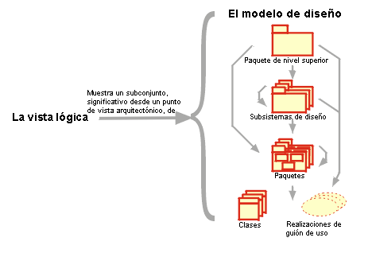

| Concepto: Vista lógica |
 |
|
| Elementos relacionados |
|---|
Para proporcionar una base para comprender la estructura y la organización del diseño del sistema, se utiliza una vista de la arquitectura llamada Vista lógica en el flujo de trabajo de análisis y diseño. Sólo hay una vista lógica del sistema, que ilustra las realizaciones de guiones de uso clave, subsistemas, paquetes y clases que abarcan el comportamiento significativo arquitectónicamente. La vista lógica se perfecciona durante las iteraciones.  La vista lógica muestra un subconjunto significativo arquitectónicamente del modelo de diseño, es decir, un subconjunto de las clases, subsistemas y paquetes, y realizaciones de guiones de uso. Hay cuatro vistas adicionales, la Vista de guión de uso (gestionada en el flujo de trabajo de requisitos), la Vista de proceso, la Vista de despliegue y la Vista de implementación, gestionada en los flujos de trabajo de implementación, análisis y diseño. Las vistas de la arquitectura se muestran en el Documento de arquitectura de software. Se puede añadir vistas diferentes, como una vista de seguridad, para representar otros aspectos específicos de la arquitectura de software. Esencialmente, las vistas de la arquitectura se pueden ver como abstracciones o simplificaciones de los modelos construidos en las que se hacen más visibles las características importantes, y se dejan de lado los detalles. La arquitectura es un método relevante para aumentar la calidad de cualquier compilación de modelo durante el desarrollo del sistema. |
© Copyright IBM Corp. 1987, 2006. Reservados todos los derechos. |